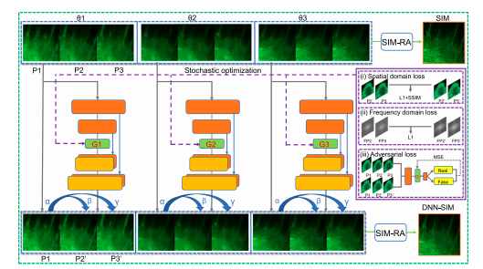
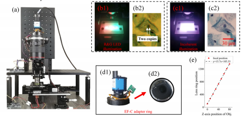
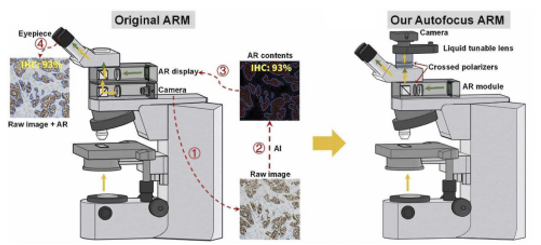

|
I work closely with Prof. Guoan Zheng (University of Connecticut, USA), Dr. Jianhua Yao (AI lab of Tencent, China) on our series of Computational Imaging projects.
My research lies in computer vision, computational imaging and machine learning.
I earned my master's degree in the Deparment of Automation, Tsinghua University , China, in Jul.2021. I worked on fast super resolution imaging with deep learning. I received my bachelor's degree from the College of Automation & College of Artificial Intelligence, Nanjing University of Posts and Telecommunications , China, in Jul. 2018. I am from TongCheng, a National Famous Historical and Cultural city in the east of China. |
Photo taken in shenzhenware. |
|  |
Xu Chen,Bowen Li, Shaowei Jiang, Terrance Zhang, Xu Zhang, Peiwu Qin, Xi Yuan, Yongbing Zhang, Guoan Zheng, Xiangyang Ji IEEE Transactions on Computational Imaging (TCI), 2021 |
|  |
Kaifa Xin, Shaowei Jiang, Xu Chen ,Yonghong He, Jian Zhang, Hongpeng Wang, Honghai Liu, Qin Peng, Yongbing Zhang, Xiangyang Ji Biomedical Optics Express (BOE), 2021 |
|  |
Jun Liao, Xu Chen , Ge Ding, Pei Dong, Hu Ye, Han Wang, Yongbing Zhang, Jianhua Yao Biomedical Optics Express (BOE), 2022 |
Education
|
 M.E. Degree in Control Engineering @
M.E. Degree in Control Engineering @
Professional Experience and Internship
|
Selected Honours
|

Created on December, 19th, 2021. Last Update: December, 21th, 2021;
Template: stolen from this.